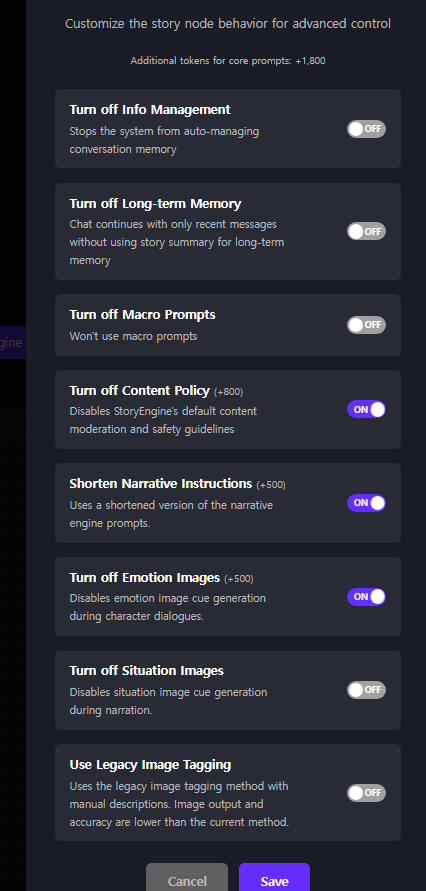

Fish_In_the_Canvas
Canvas Starter Guide v2.0.1
A node-structure walkthrough for creators new to the Canvas. It covers what each node is, what you actually write inside it, and how it behaves under the hood.
What is the Canvas?
The Canvas is the workspace where you place and connect the nodes (blocks) that make up a story chat. Each node has a defined role, and you wire them together to create the flow of data.
The two models — main and sub
StoryEngine runs on two AI models working together under the hood.
[1] Lorebook (macro) entries — keyword-matched. When a registered keyword appears in user input, the matching content is injected. max 5 injected at once Higher priority entries win the slots.
[2] Full Story — the text field on story nodes and character nodes alike. A 30,000-token space holding bulk data: worldbuilding, detailed character info, and so on.
Whatever the sub-model retrieved (lorebook + Full Story) is added on top, and the response is generated from the combination.
Image tag output smile angry and variable update instructions are also the main model's job.
Core Context is injected into the main model every single turn. Put your hard rules here — the settings that must never be forgotten.
Full Story is fetched by the sub-model only when the situation calls for it. It's storage for bulk worldbuilding and character data.
Story node
The central node of the Canvas. Character, lorebook and achievement nodes all connect into it and get compiled together. What you write here reaches the main model first, at the highest priority.

The fields you actually fill in:
| Field | Description |
|---|---|
| Is Start | Marks this node as the entry point. Exactly one story node should be set to Yes. |
| Core Context (2,000 tokens base) |
The hard-rules space. Directives the AI must always obey — SYSTEM_LAYER / WORLD_LAYER / DIRECTIVE and so on. The main model reads this before anything else. The budget is 2,000 tokens by default, and grows if you enable toggles in Advanced Settings. A canvas showing 3,800 has +1,800 worth of toggles switched on. |
| Full Story (30,000 tokens) |
The sub-model's retrieval space. Worldbuilding knowledge, location details, per-scene setup — all the bulk goes here. Unlike Core Context it is not always injected; the sub-model pulls from it as the situation calls for. The internal search method is undisclosed. |
| Prologue Message (700 tokens) |
The opening scene shown on the chat start screen — the first thing a user sees on entry. |
| Prologue Guide (300 tokens) |
First-turn handling instructions given only to the AI. "Open the next turn this way," "initial variable values are these," and so on. Never shown to the user. |
| Creator Notice (500 chars) |
A note from you to your readers. Commonly used to state which models the story was tuned for and which ones misbehave with it — worth filling in, since readers can pick their own model. |
Character node
One node per NPC. Appearance, personality, speech style, relationships — every piece of character information lives here. Connect it to a story node and the main model becomes aware of that character.

| Field | Description |
|---|---|
| Name (100 chars) |
The character's display name. Non-Latin scripts are fine. |
| Core Context (300 tokens) |
Shown in the key-information panel. Keep it to essential attributes only — name, age, gender. The budget is small on purpose, so spending tokens carefully here matters. |
| Description / Full Story (30,000 tokens) |
The same sub-model retrieval space as the story node's, though it's understood to be classified differently internally (exact behavior undisclosed). Keep it to character-related material only — personality, speech patterns, behavior, backstory, relationships. |
| Show in character preview | Whether this character appears in the preview section on the detail page. Usually left off for characters meant to be discovered in play. |
| title | An internal code label, just for your own sorting. e.g. KMR |
Lorebook node (Macro Prompts)
This is the RAG space the sub-model searches. Write entries inside a lorebook node, and when the sub-model spots a registered keyword in user input, that entry's content is injected into the main model's context.
Unlike story and character nodes, which are always present, the lorebook is injected dynamically based on what's happening.

What one entry consists of:
| Field | Description |
|---|---|
| Trigger Words (up to 5) |
The keywords that fire this entry. Add them one at a time; each becomes its own chip. |
| Always | Injects the entry every turn, ignoring keywords entirely. Use sparingly — it permanently occupies one of the five slots. |
| Prompt Text (300 tokens) |
The actual content injected when the entry fires. |
| Priority | Higher values win the five slots first. OOC and system rules are typically set around 99–100. |
| Duration (turns) | How many turns the injection persists. Usually 1. |
Image node
Manages the image set shown for a character. Each image is bound to a tag, and the main model's tag output decides which image gets displayed. Image nodes connect to character nodes.


Categorize Image Tags
Images on StoryEngine behave as an independent module, not an extension of your prompt. So for the AI to know which image suits which moment, you have to sort your tags into categories and write the descriptions yourself.
Found under the top menu: Canvas → Categorize Image Tags.

The order to do it in:
| Step | What to do |
|---|---|
| 1. Create a category | Type a name and add it. e.g. Emotions Locations Activities |
| 2. Write the description | In under 25 tokens, state when and in what situation the category applies. The AI reads this to decide which image to reach for. |
| 3. Assign tags | Add the tags from your image nodes into the matching category. e.g. Emotions → smile angry sad |
Variable node
Stores a value tracked across the chat. Boolean, number and string types are supported. Variables are either read by a trigger node to test a condition, or displayed in a custom status view.

| Field | Description |
|---|---|
| Variable Name (100 chars) |
The variable's identifier. A var_ prefix makes it readable from a status view HTML panel as {{var_NAME}}.The prefix is only needed for status view display. Without it, trigger and achievement wiring still works perfectly. |
| Variable Type | Boolean Number String |
| Initial Value | Starting state. Boolean defaults to No, Number to 0, String to empty. |
| title | Internal code label. Matching it to the related trigger and achievement makes them easy to pair up later. e.g. A1 |
Trigger node
Fires an achievement when a variable meets a condition. It takes the story node and a variable node as inputs, and signals the connected achievement node when the condition is met. You only need a trigger when you want an achievement to unlock. A variable that merely tracks a value doesn't need one.

| Field | Description |
|---|---|
| Variable to watch | The variable this trigger monitors. Must match the name on the connected variable node. |
| Value | The trigger fires when the watched variable reaches this value. For a Boolean, usually Yes. |
| title | Use the same label as the paired variable and achievement. e.g. A1 |
Achievement node
A milestone shown to the reader when its trigger fires. Connect the achievement node back into the story node so the story itself can react to it having been earned.
| Field | Description |
|---|---|
| Achievement Image | Optional artwork shown with the unlock. Click or drag-and-drop to set it. |
| Achievement Name (100 chars) |
The name the reader sees. |
| Description | Flavour text displayed when the achievement is earned. |
| Display Priority | Higher numbers appear first in the achievement list. Useful for putting story-critical unlocks at the top. |
| Hidden achievement | Hides both name and description until earned. Recommended for anything that would spoil the story. |
Other nodes
Supporting nodes you'll meet once the basics are in place. These are covered lightly on purpose — they're best learned by clicking on them and seeing what happens.
{{var_NAME}} syntax. Only variables carrying the var_ prefix are visible here.Advanced Settings
A panel that switches off parts of StoryEngine's built-in behavior. Every toggle is OFF by default, and OFF means the feature is in use. Switching one ON disables the thing named. Read them literally — "Turn off X" set to ON means X is now off.

| Toggle | What switching it ON does |
|---|---|
| Turn off Info Management | Stops the system auto-managing conversation memory. In practice it also removes RAG retrieval, which is the larger consequence. Readers tend to hit long-term memory problems partway through a chat. Leave it alone unless you know exactly why you want it off. |
| Turn off Long-term Memory | The chat continues on recent messages only, without drawing on the story summary. Be aware: the observable symptoms overlap heavily with Info Management above, and the two have never been cleanly told apart from the outside. Treat them as related rather than independent. |
| Turn off Macro Prompts | Disables macro prompts — meaning your lorebook stops firing entirely. Unambiguous, unlike the two above. |
| Turn off Content Policy +800 | Disables StoryEngine's default content moderation and safety guidelines. Conceptually paired with Shorten Narrative Instructions below — both strip out vendor-supplied baseline prompting. Largest token refund of the set. Platform rules still apply either way. The toggle changes prompting, not your obligations — regional title restrictions, terms of service and moderation of published work all remain in force. |
| Shorten Narrative Instructions +500 | Uses a condensed version of the narrative engine prompts. These vendor defaults handle plot scaffolding and general storytelling posture, and they're deliberately broad — which suits most creators fine. If you're writing your own tight core logic, though, that generic layer works against you. Commonly enabled by creators doing heavy custom prompt work. |
| Turn off Emotion Images +500 | Stops emotion image cues during character dialogue. Normally the character profile area calls an image whenever an emotion is detected in the exchange. That detection is computationally expensive, and creators who don't need per-emotion portraits often switch it off for that reason alone. |
| Turn off Situation Images | The same idea applied to situation image cues during narration, rather than character emotion. |
| Use Legacy Image Tagging | Don't. Reverts to the old manual-description tagging method; output quality and accuracy are both worse. The real cost is that failures become unexplainable — calls that look entirely correct still don't behave, with nothing telling you why. Leave this off. |
Publish settings — the page outside the Canvas
These fields live outside the Canvas and don't affect the AI at all. They're the storefront: what a reader sees before they ever press start. Most creators ignore this page entirely until the Canvas work is finished, which is why it's last here too.

| Field | What to know |
|---|---|
| Title | The story's name. If you plan to localize: on the KR side, explicitly crude or vulgar phrasing in a title is not permitted. Pick something that survives the trip. |
| Brief Introduction | 40-character limit. It's a one-line hook, not a summary. Easiest to write last, once you know what the story actually became. |
| Description | Supports a minimal subset of Markdown: bold, a little font-size control, simple tables, and externally hosted images. Don't expect full Markdown — anything fancier won't render. Images must be hosted elsewhere and linked in. |
| Tags | You can dump in every tag across every supported language at once. The platform automatically surfaces only the tags matching the viewer's language, so there is no downside to tagging in all of them. Do it. |
| Thumbnail | 4:5 ratio. Animated WebP sits around 2–3 MB (this ceiling keeps shifting). GIF was last confirmed near 10 MB. If an upload fails without explanation, size is the first thing to check. |
| Intro Video | MP4, max 200MB, hard 2-minute cap. No leniency on the length — trim before uploading. |
| Add Collaborators | Enter another creator's StoryEngine account email to bring them onto the work. You control whether they get Canvas access, and revenue can be split in 10% increments. |
| Creator Settings | Chooses which collaborator is shown as the representative creator. Takes a creator nickname or OID. |
| StoryChat Original | An opt-in exclusivity designation: works provided exclusively to StoryEngine become eligible, and standard creators receive an additional 5 percentage-point settlement bonus. For 90 days after designation, deleting the work, making it private, or uploading it elsewhere is restricted. Do not try to game this. The operations team has stated plainly that workarounds — publishing elsewhere first and staggering the upload here, or re-uploading the same build under a different name — result in a ban, no exceptions. |